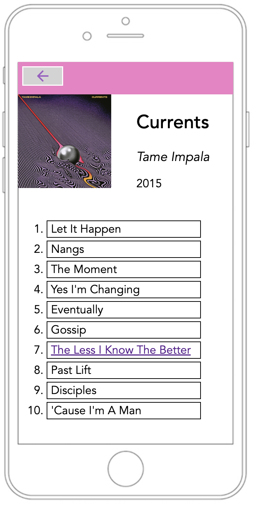

My Music Player project was created for my CS 300 class, and is written in HTML, CSS, and Javascript. The purpose of this project is to emulate a music player on a mobile device. This is an image of the album selection screen:
From this page, we can select an album my clicking on it. This takes us to a tracklist page, where we can see all of the songs on the album in a list:
On this page, we can select the song we want to play. If we select song #7, we get to the song player:
On the player screen, we have the album the art, the title of the song that is currently playing, as well as the title of the album and artist. We can skip to any part of the song using the blue slider, and the time on the left will display how far into the song we are. Additionally, we can go the next/previous song in the album and change the volume.